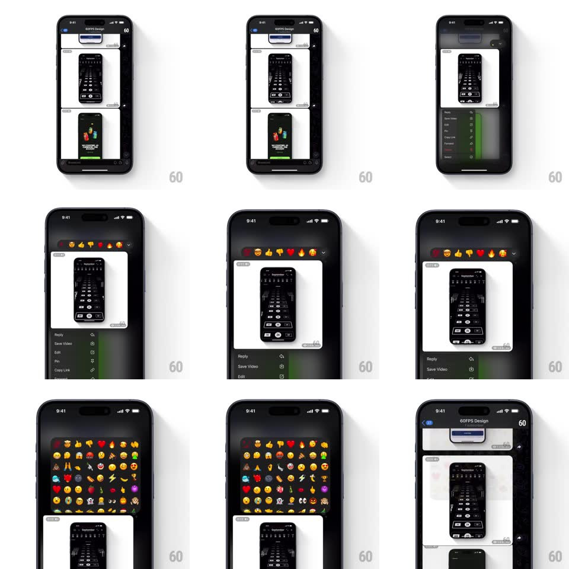

Media
Frame-by-frame

Rebuild this interaction 1:1: Telegram's expandable reaction bar - the long-press emoji row carries a chevron that springs the compact bar open into a full scrolling emoji grid, rows cascading in, then collapses back to the row on selection or dismiss.

Rebuild this interaction 1:1: Telegram's expandable reaction bar - the long-press emoji row carries a chevron that springs the compact bar open into a full scrolling emoji grid, rows cascading in, then collapses back to the row on selection or dismiss. ## Integration Integration: stack-agnostic spec - springs given as stiffness/damping, timed motions as duration + curve; map every value to your framework and animation library of choice. ## Scene Dark chat, long-press state on an image message: a floating bar with ~7 large emoji and a down-chevron at its right end, the context menu beneath. Expanded: the bar becomes a tall rounded panel - a grid of dozens of emoji (faces, hearts, gestures, objects) over the dimmed chat. ## Motion spec Pattern: bar-to-grid springy expansion. - Tap the chevron: the bar's container expands downward and wider (height/width spring ~320/20, one soft overshoot) while the first row of emoji stays pinned - the bar STRETCHES into the grid, no swap. - New rows cascade in top-to-bottom (fade + 10px rise, 220ms, 35ms per row), each emoji micro-popping (scale 0.85 -> 1, spring ~440/20). - The chevron rotates 180deg during expansion (300ms) - it becomes the collapse control. - Scrolling the grid: standard physics inside the expanded panel; the pinned top row stays as quick reactions. - Selection or tap-outside: the grid contracts back to the single row (spring ~360/24), rows exiting bottom-first in reverse cascade; the chevron rotates home. ## Calibration - The first row's emoji never move during the morph - spatial continuity anchors the expansion. - Grid emoji are the same size as bar emoji - the expansion is about MORE, not bigger. ## Reduced motion Panel fades between bar and grid states; no cascade. ## Don't miss - It's a container morph: one surface growing, not a new sheet appearing. - The reverse cascade on collapse - symmetry makes the widget feel engineered.